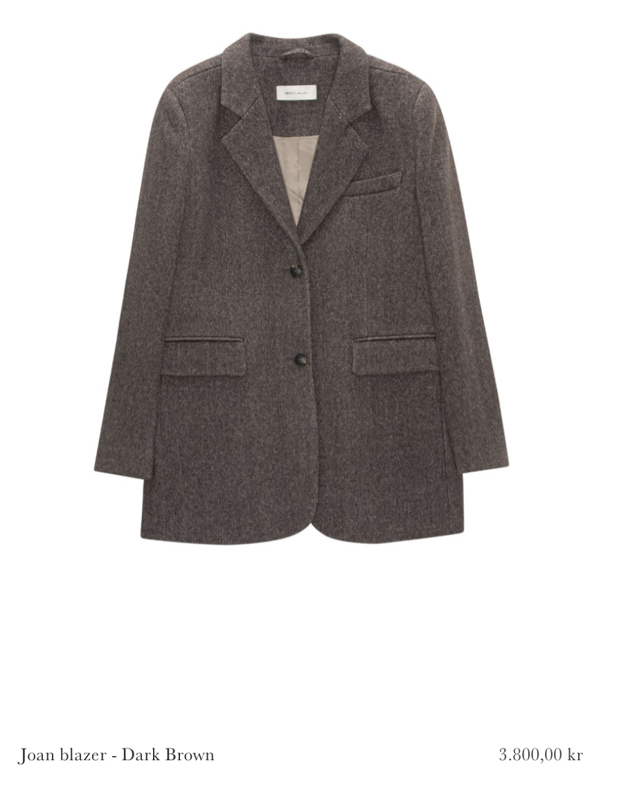
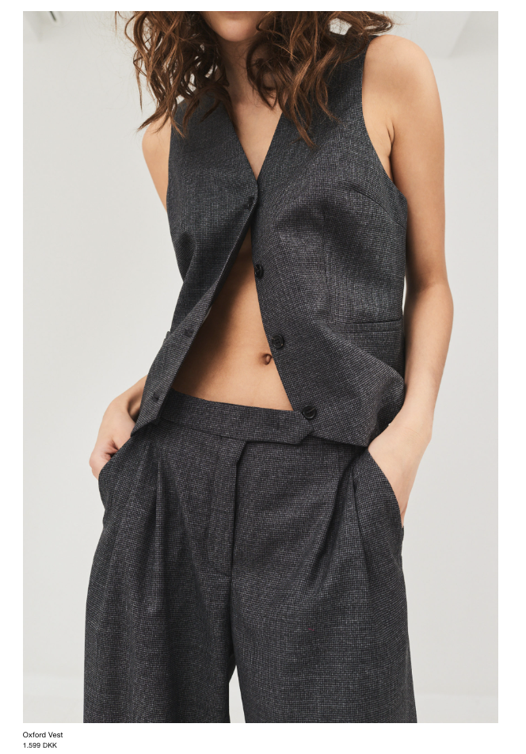

Nyheder i vores feed
Læs om de nyeste bæredygtige mærker her


Det danske mærke Blanche har
bæredygtighed som varemærke. Et anden populært mærke er Skall Studio,
som laver tøj ud af dansk certificeret uld...